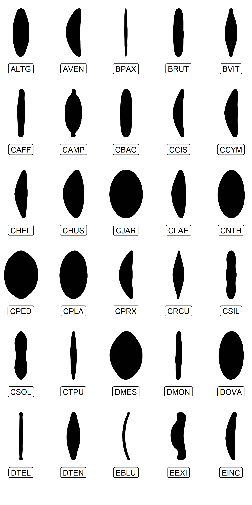

DiatoViz is an R package developed for diatomists.
The DiatoViz package provides a simple function to add silhouettes of diatoms to plots generated ggplot2. Currently, the package contains 89 diatom silhouettes. The silhouettes of diatoms were created using the SHERPA software (Kloster et al. 2014).
Installation
You can install the development version of DiatoViz from GitHub with R package remotes:
#install.packages("remotes")
remotes::install_github("junqueiragaabi/DiatoViz")How does it work?
To use Diatoviz, your species list must be formatted with the specific abbreviations provided by the Omnidia software. The main function geom_diatom_code() geometry draws diatom species shapes. Here you can see some the current available diatoms to plot.
library(tidyverse)
library(DiatoViz)
diatoms <- DiatoViz::valid_diatom_code()
df_example <- data.frame(
a = c(rep(1:5, 17),c(1,2,3,4)),
b = sort(c(rep(1:17, 5), c(0,0,0,0)), decreasing = TRUE),
species = diatoms) %>%
slice(1:30)
ggplot(df_example, aes(x = a, y = b)) +
geom_diatom_code(aes(diatom_code = species), height = 0.1) +
geom_label(aes(label = species), nudge_y = -0.45) +
theme_void()+
theme(plot.margin = margin(15,15,15,15,"pt"))+
coord_cartesian(clip = "off")
🧡 Contribution
Can’t find the diatom you want?
Contributions to DiatoViz package are welcome!
Please contact Gabriela Junqueira or submit a pull request.
Credits
We extend our gratitude to Sebastian Carl for his creation of the nflplotR and nbaplotR packages, which played a crucial role in shaping DiatoViz.